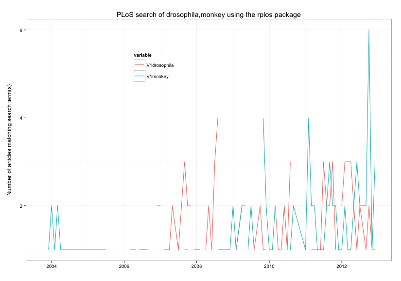

rplos is an R wrapper to the search and altmetrics APIs for PLoS Journals. Let us know of any issue on our issues page.
About the package
rplos is an R wrapper to the Public Library of Science search and ALM APIs.You do not need any API keys :)
Installing rplos
A stable version is now available on CRAN.# Stable version from CRAN
install.packages('rplos')
library(rplos)
# or install the development version from our GitHub repo.
install.packages('devtools')
library(devtools)
install_github('rplos', 'ropensci', ref='almv3')
library(rplos)Altmetrics on PLoS papers - get em
Get total metrics across dates
> alm(doi="10.1371/journal.pone.0029797")
.id shares total citations pdf html comments likes groups
1 citeulike 1 1 NA NA NA NA NA NA
2 crossref NA 4 4 NA NA NA NA NA
3 nature NA 4 4 NA NA NA NA NA
4 pubmed NA 0 0 NA NA NA NA NA
5 scopus NA 1 1 NA NA NA NA NA
6 counter NA 25603 NA 2113 23391 NA NA NA
7 researchblogging NA 1 1 NA NA NA NA NA
8 biod NA 19 NA 0 0 NA NA NA
9 wos NA 0 0 NA NA NA NA NA
10 pmc NA 0 NA 0 0 NA NA NA
11 facebook 0 540 NA NA NA 0 0 NA
12 mendeley 0 37 NA NA NA NA NA 0
13 twitter NA 8 NA NA NA 8 NA NA
14 wikipedia 169 208 39 NA NA NA NA NA
15 scienceseeker NA 0 NA NA NA NA NA NASearch for DOI's, then feed into alm
> dois <- searchplos(terms='evolution', fields='id', limit = 3)
> out <- alm(doi=as.character(dois[,1]))
> lapply(out, head)
[[1]]
.id citations total shares pdf html comments likes groups
1 bloglines 0 0 NA NA NA NA NA NA
2 citeulike NA 24 24 NA NA NA NA NA
3 connotea NA 6 6 NA NA NA NA NA
4 crossref 163 163 NA NA NA NA NA NA
5 nature 0 0 NA NA NA NA NA NA
6 postgenomic NA 1 1 NA NA NA NA NA
[[2]]
.id citations total shares pdf html comments likes groups
1 bloglines 0 0 NA NA NA NA NA NA
2 citeulike NA 0 0 NA NA NA NA NA
3 connotea NA 0 0 NA NA NA NA NA
4 crossref 0 0 NA NA NA NA NA NA
5 nature 0 0 NA NA NA NA NA NA
6 postgenomic NA 0 0 NA NA NA NA NA
[[3]]
.id citations total shares pdf html comments likes groups
1 bloglines 0 0 NA NA NA NA NA NA
2 citeulike NA 8 8 NA NA NA NA NA
3 connotea NA 7 7 NA NA NA NA NA
4 crossref 8 8 NA NA NA NA NA NA
5 nature 0 0 NA NA NA NA NA NA
6 postgenomic NA 9 9 NA NA NA NA NAAltmetrics on PLoS papers - visualize em
Get altmetrics data for a single paper, and visualize the total data across dates
> out <- alm(doi='10.1371/journal.pone.0001543', info='detail')
> almplot(out, type='totalmetrics') # just totalmetrics data
Get altmetrics data for a single paper, and visualize the data across dates
almplot(dat=out, type='history') # just historical data
Retrieve PLoS article-level metrics (ALM) events (i.e., the details of what actually occurred to generate altmetrics).
> out <- almevents(doi="10.1371/journal.pone.0029797")
> out[["pmc"]] # get the results for PubMed Central
abstract cited-by figure full-text month pdf scanned-page-browse scanned-summary supp-data unique-ip year
1 1 0 9 51 1 8 0 0 0 42 2012
2 0 0 11 15 2 4 0 0 2 11 2012
3 0 0 0 11 3 4 0 0 0 12 2012
4 1 0 0 6 4 2 0 0 0 6 2012
5 0 0 0 5 5 1 0 0 0 5 2012
6 0 0 2 7 6 2 0 0 0 9 2012
7 1 0 3 6 7 3 0 0 0 8 2012
8 1 0 0 5 8 0 0 0 0 4 2012
9 0 0 3 14 9 5 0 0 0 13 2012
10 1 0 1 20 10 4 0 0 0 16 2012
11 0 0 1 13 12 1 0 0 0 12 2012
12 1 0 0 10 11 1 0 0 0 9 2012> out[["twitter"]] # get the results for twitter (boo, there aren't any)
[1] "sorry, no events content yet"> out[c("scienceseeker","pmc")] # get the results for two sources
$scienceseeker
[1] "sorry, no events content yet"
$pmc
abstract cited-by figure full-text month pdf scanned-page-browse scanned-summary supp-data unique-ip year
1 1 0 9 51 1 8 0 0 0 42 2012
2 0 0 11 15 2 4 0 0 2 11 2012
3 0 0 0 11 3 4 0 0 0 12 2012
4 1 0 0 6 4 2 0 0 0 6 2012
5 0 0 0 5 5 1 0 0 0 5 2012
6 0 0 2 7 6 2 0 0 0 9 2012
7 1 0 3 6 7 3 0 0 0 8 2012
8 1 0 0 5 8 0 0 0 0 4 2012
9 0 0 3 14 9 5 0 0 0 13 2012
10 1 0 1 20 10 4 0 0 0 16 2012
11 0 0 1 13 12 1 0 0 0 12 2012
12 1 0 0 10 11 1 0 0 0 9 2012
Lookup article info via CrossRef with DOI.
> crossref(doi="10.1371/journal.pone.0042793")
Calvo R, Zheng Y, Kumar S, Olgiati A, Berkman L and Mock N (2012). “Well-Being and Social Capital on
Planet Earth: Cross-National Evidence from 142 Countries.” _PLoS ONE_, *7*. . > print(crossref("10.3998/3336451.0009.101"), style="Bibtex")
@Article{,
title = {In Google We Trust?},
author = {Geoffrey Bilder},
journal = {The Journal of Electronic Publishing},
year = {2006},
month = {01},
volume = {9},
doi = {10.3998/3336451.0009.101},
}searchplos is the main function to search the full text of PLoS articles.
You can search alot of articles
> head(searchplos(terms='ecology', fields='id', limit = 600)) # you can search alot of articles
id
1 10.1371/journal.pone.0001248
2 10.1371/journal.pone.0017342
3 10.1371/journal.pbio.0020072
4 10.1371/journal.pone.0054689
5 10.1371/journal.pbio.1001248
6 10.1371/journal.pbio.0000073
Specifiy fields to return in the output
> searchplos('ecology', 'id,publication_date', limit = 2) # specifiy fields to return in the output
id publication_date id.publication_date
1 10.1371/journal.pone.0001248 2007-11-28T00:00:00Z none
2 10.1371/journal.pone.0017342 2011-03-09T00:00:00Z none
query a specific journal
> head(searchplos(terms="*:*", 'id', toquery=list('cross_published_journal_key:PLoSONE',year=2010), start=0, limit=50)) # query a specific journal
id
1 10.1371/journal.pone.0037622
2 10.1371/journal.pone.0016598
3 10.1371/journal.pone.0018933
4 10.1371/journal.pone.0025931
5 10.1371/journal.pone.0014094
6 10.1371/journal.pone.0042294
uBio
You can also use other functions to search for specific things, like titles
> plostitle(terms='drosophila', fields='title', limit=10) # and return the titles only
title
1 Combinatorial Coding for Drosophila Neurons
2 Phenotypic Plasticity of the Drosophila Transcriptome
3 Quantification of Food Intake in Drosophila
4 School Students as Drosophila Experimenters
5 Parametric Alignment of Drosophila Genomes
6 A Tripartite Synapse Model in Drosophila
7 Identification of Drosophila MicroRNA Targets
8 Expression in Aneuploid Drosophila S2 Cells
9 Reinforcement of Gametic Isolation in Drosophila
10 A DNA Virus of Drosophila
> plostitle(terms='drosophila', fields='journal', limit=10) # return just journal name
journal
1 PLoS Biology
2 PLoS Genetics
3 PLoS ONE
4 PLoS Biology
5 PLoS Computational Biology
6 PLoS ONE
7 PLoS Biology
8 PLoS Biology
9 PLoS Biology
10 PLoS ONE
Plot results through time for serach results from PLoS Journals.
> plot_throughtime(list('drosophila','monkey'), 100)

Search results on a keyword over all fields in PLoS Journals.
> plosword(list('monkey','Helianthus','sunflower','protein','whale'), vis = 'TRUE')
$table
No_Articles Term
1 4808 monkey
2 129 Helianthus
3 348 sunflower
4 49162 protein
5 527 whale
$plot

Support and Bugs
For bugs, feature requests and other issues, please submit an issue via Github.For general comments, email scott at ropensci.gmail.com . This package is part of the rOpenSci suite of R tools. For similar packages visit ropensci.org
License

This work is licensed under a Creative Commons Attribution 3.0 Unported License.